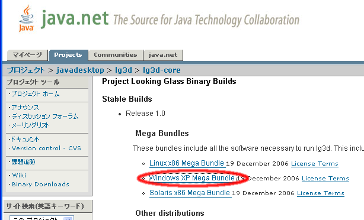
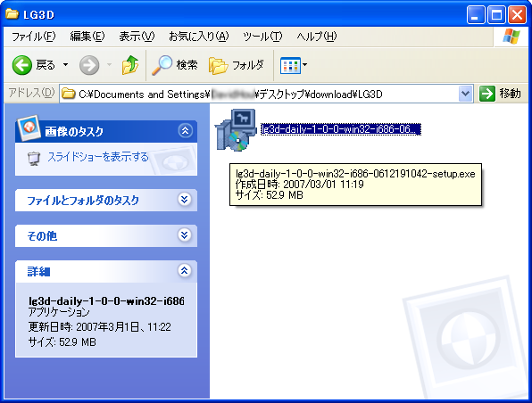
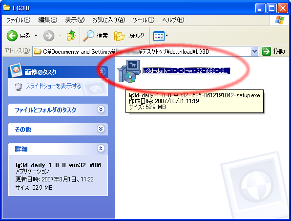
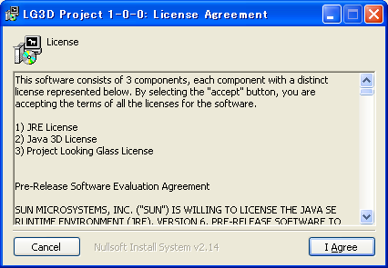
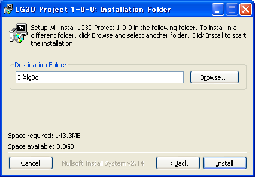
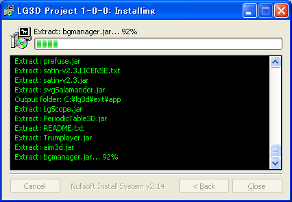
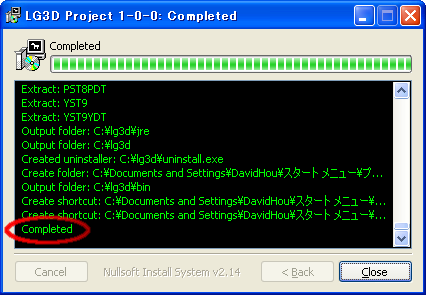
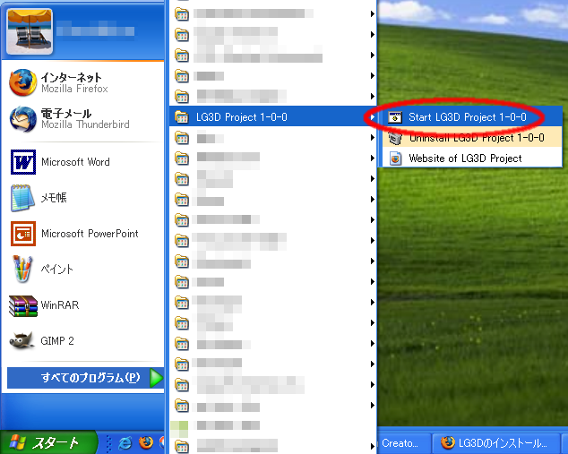
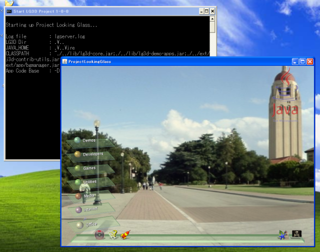

JavaOne Tokyo Hands on Lab :
Project Looking Glass (LG3D) Basic Programming
LG3Dのインストールと実行方法 ( Windows XP 編 )
準備
Windows XP で LG3D 1.0 を実行するためのすべてのコンポーネントは Windows XP 専用のインストーラにまとめられています。
LG3Dのウェブページからインストーラをダウンロードし、実行するだけでインストールを行えます。
- ウェブページURL https://lg3d-core.dev.java.net/binary-builds.html
- インストーラ名 Windows XP Mega Bundle
- ウェブページのスクリーンショット↓

補足:
LG3D 0.7.1から Javadoc が独立したパッケージになりました。
(javadoc-lg3d-fcs-rel-0-7-1-generic-0510281819.tar.gz)
ただ、現状の配布形式は tar.gz形式のため、Windows環境で解凍するためには
別途 tar.gz に対応した解凍ツールが必要になります。
そのため、このテキストではJavadocのインストール部分は解説していません。
LG3D Release 1.0 のインストール
LG3Dのインストールは"Administrator"権限を持つユーザで行う必要があります。
ここではデスクトップ上にdownload\lg3d
というディレクトリを作成し、Windows XP 専用のインストーラーをダウンローしたとします

- lg3d-daily-1-0-0-win32-i686-0612191042-setup.exe をダブルクリックし、インストーラを起動します。

- しばらく待つとインストーラが起動します。
ライセンスが表示されるので確認してください。
インストールを継続する場合は「I Agree」
をクリックします。

- インストールフォルダの選択に移ります。
Destination Folderにはインストール先のディレクトリを入力します。
この場合、インストール先は「C:\lg3d\」になります。
続けるには「Install」ボタンをクリックします。

- LG3D Release 1.0がインストールされます。

- LG3D Release 1.0のインストールの「Completed」が表示されるので、
「Close」をクリックして、インストーラを終了します。

LG3Dの実行
LG3Dの実行はスタートメニューから行います。
実行手順は以下の通りです。
- 「スタートメニュー」から
「すべてのプログラム」⇒
「LG3D Project 1-0-0」⇒
「Start LG3D Project 1-0-0」を選択します。

- 下図は実行画面です。

補足
インストールディレクトリの etc\lg3d\displayconfig\j3d1x1 ファイルの設定を変更することにより
LG3Dウィンドウの大きさを変更することが出来ます。
(ここではc:\lg3d\etc\lg3d\displayconfig\j3d1x1になります)
下の例では画面サイズを 1152x864 にしています。
画面サイズの代わりに NoBorderFullScreen と指定することでフルスクリーン表示も可能です。
変更する箇所を赤(太字)で示します。
/*
************************************************************************
*
* Java 3D Calibration file for single-screen desktop configuration with
* neither head tracking nor 6DOF sensor tracking.
*
************************************************************************
*/
// Create a new screen object and associate it with a logical name and a
// number. This number is used as an index to retrieve the AWT GraphicsDevice
// from the array that GraphicsEnvironment.getScreenDevices() returns.
//
(NewScreen ProjectLookingGlass 0)
// Set the available image area for a full screen. This is important when
// precise scaling between objects in the virtual world and their projections
// into the physical world is desired through use of an explicit ScreenScale
// view attribute. The defaults are 0.365 meters for width and 0.292 meters
// for height.
//
(ScreenAttribute ProjectLookingGlass PhysicalScreenWidth 0.360)
(ScreenAttribute ProjectLookingGlass PhysicalScreenHeight 0.288)
//(ScreenAttribute ProjectLookingGlass WindowSize NoBorderFullScreen)
//(ScreenAttribute ProjectLookingGlass WindowSize (800 600))
(ScreenAttribute ProjectLookingGlass WindowSize (1152x864))
// Create a view using the defined screen.
//
(NewView view0)
(ViewAttribute view0 Screen ProjectLookingGlass)
(ViewAttribute view0 FrontClipDistance 0.01)
(ViewAttribute view0 BackClipDistance 10.0)
(ViewAttribute view0 WindowEyepointPolicy RELATIVE_TO_COEXISTENCE)
(ViewAttribute view0 WindowMovementPolicy VIRTUAL_WORLD)
(ViewAttribute view0 WindowResizePolicy VIRTUAL_WORLD)
(ViewAttribute view0 ScreenScalePolicy SCALE_EXPLICIT)
// For debugging this will give us the standard scale world and view
// but in a window. Obviously if the window is reduced in size less of
// the world is visible.
(ViewAttribute view0 CoexistenceCenteringEnable true)
(ViewAttribute view0 WindowEyepointPolicy RELATIVE_TO_WINDOW)
(ViewAttribute view0 WindowMovementPolicy PHYSICAL_WORLD)
// Enable stereo viewing if desired
// (ViewAttribute view0 StereoEnable true)
|
JDK と Java3D のインストールと環境変数の設定
Windows版 LG3D は実行のための JRE(Java Runtime Enviroment) が組み込まれていますが、
開発環境である JDK は含まれていません。
LG3Dアプリケーションの開発を行うためには JDK 6 と Java3D 1.5 をインストールする必要があります。
まず、JDK6 のインストーラと Java3D 1.5 のバイナリをダウンロードします。
以下のファイルは執筆時点(2007/3/1)での最新版です。 できるだけ最新版を利用してください。
ダウンロードしたファイルは デスクトップ\download\lg3d にあるとします。
| コンポーネント名 | ファイル名 | ダウンロード元 |
|---|
| JDK 6.0 | jdk-6-windows-i586.exe | http://java.sun.com/javase/ja/6/download.html |
| Java 3D 1.5 | java3d-1_5_1-build1-windows-i586.zip | https://java3d.dev.java.net/binary-builds-pre.html |